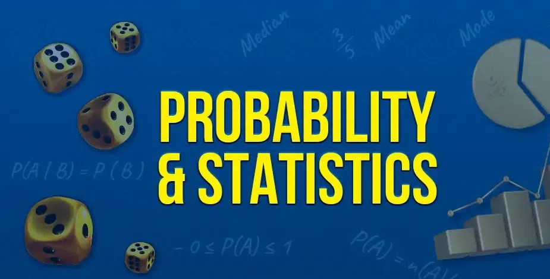

Course Description
This course develops statistical reasoning and probabilistic modeling skills for data interpretation, hypothesis testing, and forecasting.
Instructor Details
Course Instructor: Ramesh Kandukuri
Educational Qualifications: PhD from IIT Kharagpur, M.Sc from IIT Madras. Journals Published: 12 international, 8 national.
Course Curriculum
- Course Objectives
- Apply statistical tools for real-world data analysis.
- Understand probability distributions and inference methods.
- Course Outcomes
- Solve hypothesis testing and distribution-based problems.
- Interpret trends and variability in practical datasets.
- UNIT-I: Basic Statistics
- Central tendency, dispersion, and graphical summaries.
- UNIT-II: Distributions
- Univariate, bivariate, joint and conditional distributions.
- UNIT-III: Probability Models
- Binomial, Poisson, normal distributions and usage.
- UNIT-IV: Hypothesis Testing
- z, t, chi-square tests, confidence intervals and p-values.
- UNIT-V: ANOVA and Time Series
- Variance analysis, trend detection and forecasting basics.